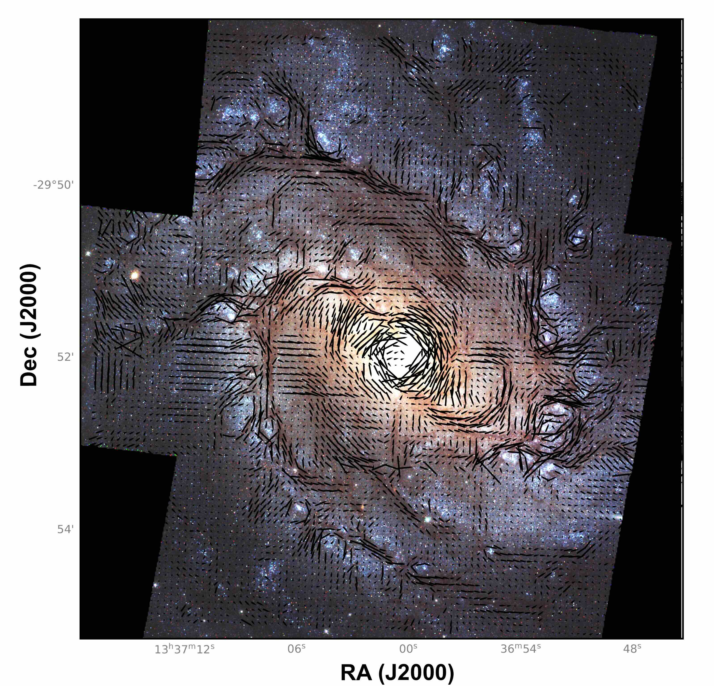
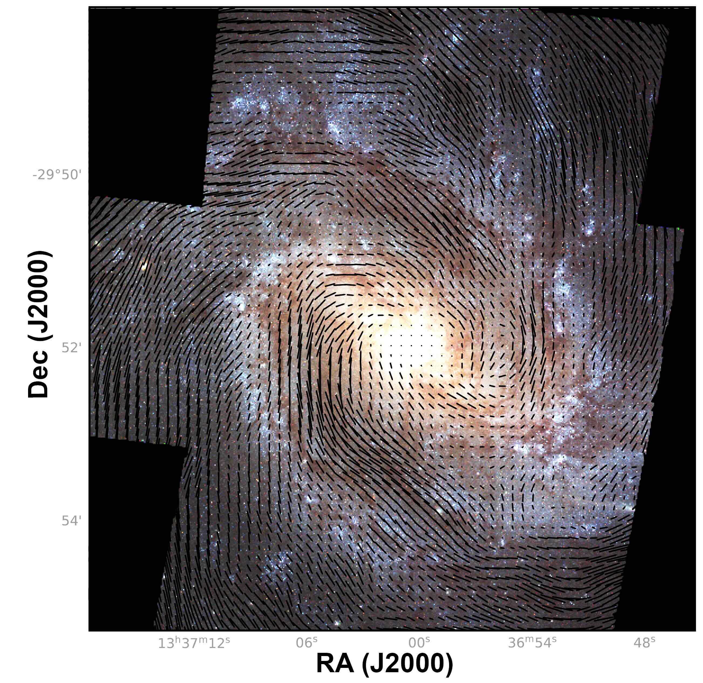

About Me

Hi! I am Divya, a 3rd year graduate student at Texas A&M University. My research focuses on the diversity of Type Ia supernovae, investigating their progenitor systems and explosion mechanisms to enhance
their reliability as standard candles in cosmology. These thermonuclear explosions are fundamental to measuring extragalactic distances, and a deeper understanding of their intrinsic variations is critical
for refining constraints on the accelerated expansion of the universe. Additionally, I study optical polarization in galaxies to probe the signatures of interstellar dust, magnetic fields, and large-scale
galactic structures. By analyzing the polarization properties of light, my work aims to explain the physical processes governing the interstellar medium and the structural evolution of galaxies within
the cosmic framework.
Research
Imaging Polarimetry of M83 Galaxy
Magnetic fields regulate the overall star formation in galaxies and play a crucial role in molecular cloud evolution. Yet, their
detailed morphology remains largely unclear. The galactic magnetic fields consist of two main components: a regular component
and a turbulent component. The regular component of the magnetic field arises mainly from large-scale dynamo processes. Isotropic fields
in the turbulent component are created by chaotic processes like supernova explosions, stellar winds, and gas turbulence resulting in random,
directionless fields. Anisotropic magnetic fields result from compression, shear, or ordered flows in the ISM, where processes like
differential rotation and gas cloud dynamics align random fields into more ordered structures.
Figure 1 shows the V-band optical polarization map of the M83 galaxy, observed using the VLT/FORS1. The original resolution of the
polarization map is 0.7" which is rebinned to a resolution of 14". Figure 2 shows the 6 cm radio
polarization map 12", obtained by combining data from the VLA and Effelsberg telescopes. While radio
polarization is very well tracing the large-scale ordered magnetic fields (composed of regular and anisotropic magnetic fields), it is
unable to capture the small-scale isotropic turbulent fields often present in star-forming regions and galactic outflows. These regions
are crucial for understanding the interplay between magnetic fields, star formation, and feedback processes. Optical polarization,
however, is able to trace a lot more turbulent features. This result is revolutionary and demonstrates the capability of
imaging polarimetry to study interstellar dust, magnetic fields, and galactic structures.


Figure 1 (left): V band polarization map at a resolution of 14" over HST colored image of M83.
The polarization vectors have length proportional to the degree of polarization. The color image was computed using HST F438W
(blue), a combination of F555W and F547M (green), and F814W (red). Figure 2 (right): 6 cm radio polarization map at a resolution of
13.6" over the HST-colored image.
UV-Optical Analysis of High-Velocity Type Ia Supernova
Despite
Publications
Spectropolarimetry of Type Ia Supernova
Another aspect of my research is to understand the explosion mechanism and progenitors of
Type Ia Supernovae (SNe Ia). We aim to use spectropolarimetry, which is a technique that
exploits the polarization properties of light emitted by supernovae across various wavelengths and enables us to discern the overall shape of the emitting region.
This overall geometry helps us differentiate between different models of SNe Ia, giving better constraints on the progenitors system and explosion mechanism.
 Left: The mass above the photosphere as seen by photons in the U, B, and V bands as a function of time for the normal Type Ia SN calculated in the off-centre angle-averaged version of the delayed-detonation Model 25 (Hoeflich 2017). The exponential index (n) of the radial density distribution at the position of the photosphere as a function of time is also shown by the red triple-dot–dashed line. The five epochs of VLT spectropolarimetry are marked by grey vertical dashed lines. Middle: Angle-averaged abundance structure as a function of expansion velocity, also calculated using Model 25. Vertical grey-dashed lines indicate the location of the scattering photosphere – that is, τsc = 1 at the times when the VLT spectropolarimetry was obtained. The region with electron-capture elements is indicated by EC. Right: The 56Ni distribution as seen above the photosphere on day +14.5 based on the hydrodynamical simulation of the off-centre detonation. The mass fraction of off-centre 56Ni above the photospheric radius (dark-red) is ∼6 per cent. At this phase, the radius of the photosphere is close to the location (black dot) where the deflagration-to-detonation transition takes place, and it expands with ∼7000 km s−1. The mass fraction is colour-coded in a domain size of ±23 500 km s−1.
Reference : https://arxiv.org/abs/2301.04721s
Left: The mass above the photosphere as seen by photons in the U, B, and V bands as a function of time for the normal Type Ia SN calculated in the off-centre angle-averaged version of the delayed-detonation Model 25 (Hoeflich 2017). The exponential index (n) of the radial density distribution at the position of the photosphere as a function of time is also shown by the red triple-dot–dashed line. The five epochs of VLT spectropolarimetry are marked by grey vertical dashed lines. Middle: Angle-averaged abundance structure as a function of expansion velocity, also calculated using Model 25. Vertical grey-dashed lines indicate the location of the scattering photosphere – that is, τsc = 1 at the times when the VLT spectropolarimetry was obtained. The region with electron-capture elements is indicated by EC. Right: The 56Ni distribution as seen above the photosphere on day +14.5 based on the hydrodynamical simulation of the off-centre detonation. The mass fraction of off-centre 56Ni above the photospheric radius (dark-red) is ∼6 per cent. At this phase, the radius of the photosphere is close to the location (black dot) where the deflagration-to-detonation transition takes place, and it expands with ∼7000 km s−1. The mass fraction is colour-coded in a domain size of ±23 500 km s−1.
Reference : https://arxiv.org/abs/2301.04721s
Resources
High-Velocity SN Ia
View Poster (PDF)
Imaging Polarimetry of M83 Galaxy
View Poster (PDF)
Contact
Email: dimi_24@tamu.edu